화물 운송 한 건,
휴대폰에서 확인한 흐름
서버 AI 추천을 받은 뒤 기사님이 수락하고, 상차·하차 사진을 찍어 운송을 마친 과정을 16장의 실제 화면으로 남겼습니다. 마지막에는 화주가 같은 주문의 결과를 확인합니다.
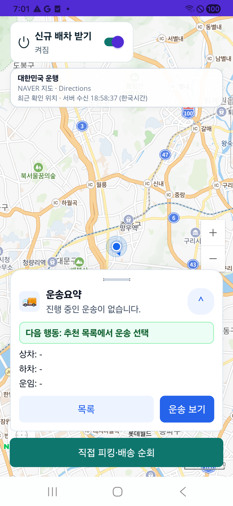
기사 운행 지도 준비
신규 배차 받기가 켜져 있고 아직 진행 중 운송이 없는 대기 화면입니다.
캡처 시점의 준비 상태이며 이후 주문의 추천 전 상태입니다.
원본 크기로 보기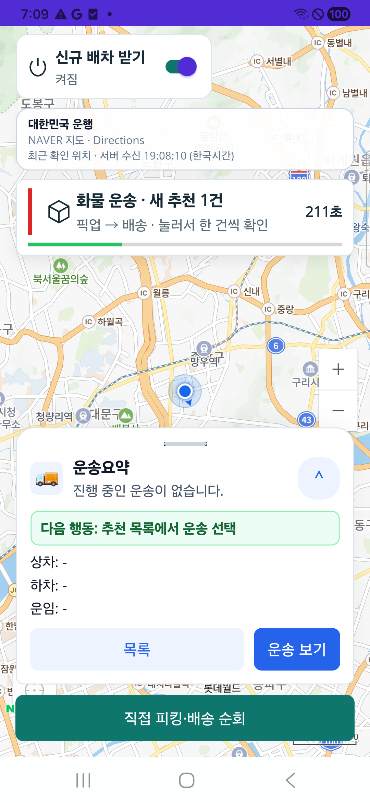
새 화물 추천 배너
서버에 저장된 새 추천을 앱 전경 조회로 받아 상단 배너와 남은 시간을 표시했습니다.
외부 FCM 푸시나 백그라운드 수신 성공을 뜻하지 않습니다.
원본 크기로 보기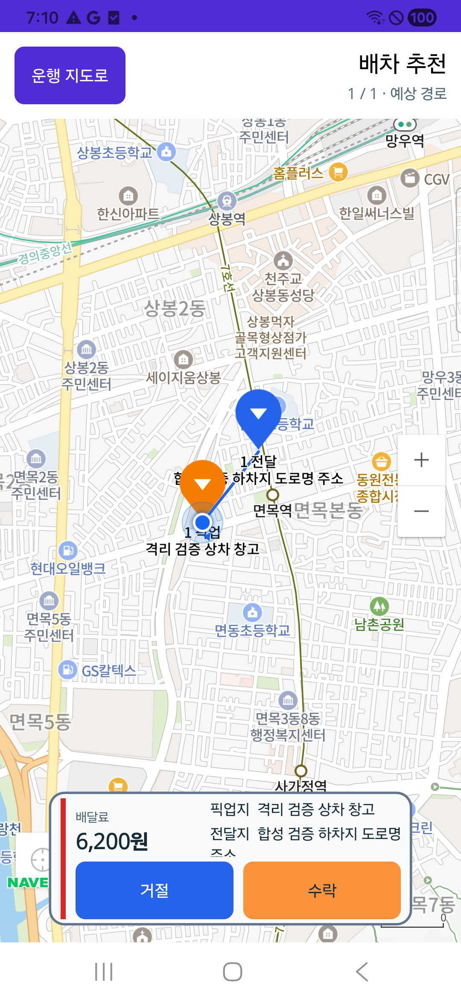
지도와 6,200원 추천 카드
주황 상차 핀·파랑 하차 핀과 제안 보수 6,200원, 거절·수락 버튼을 확인했습니다.
핀 좌표와 경로는 합성 시험 자료입니다. 실제 주행 경로·운임 산정 증거가 아닙니다.
원본 크기로 보기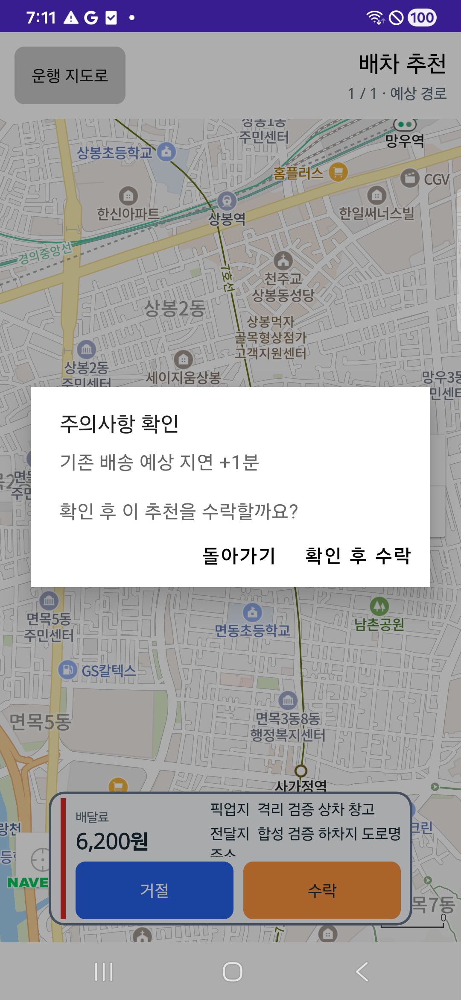
주의사항 확인 후 수락
수락 전에 예상 지연 안내를 확인하고 ‘확인 후 수락’으로 진행했습니다.
이 장면은 확인 창입니다. 수락 저장 결과는 이후 화면과 정본 조회로 따로 대조했습니다.
원본 크기로 보기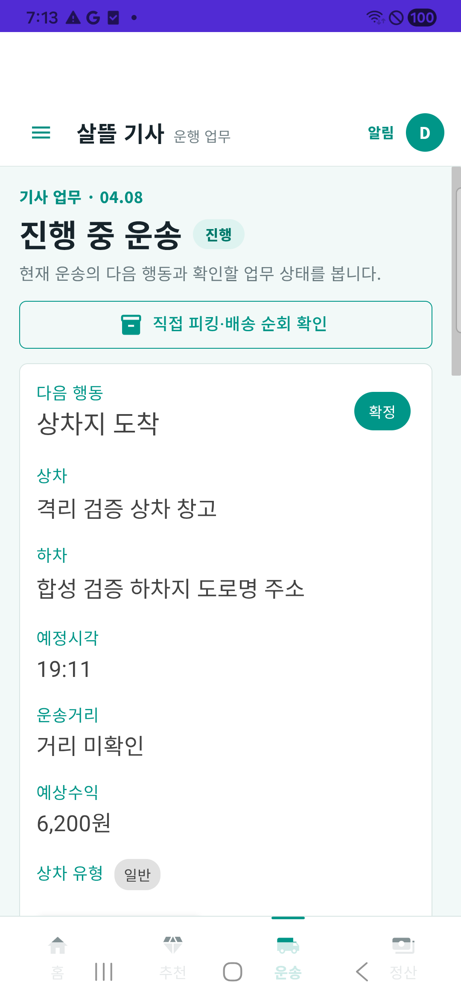
확정된 운송과 다음 행동
진행 중 운송 화면에 다음 행동 ‘상차지 도착’과 예상 수익 6,200원이 표시됩니다.
지도 하단 버튼에서 전환되지 않은 현상이 있어 Android 뒤로가기와 기존 운송 메뉴로 진입했습니다. 거리 표시는 미확인입니다.
원본 크기로 보기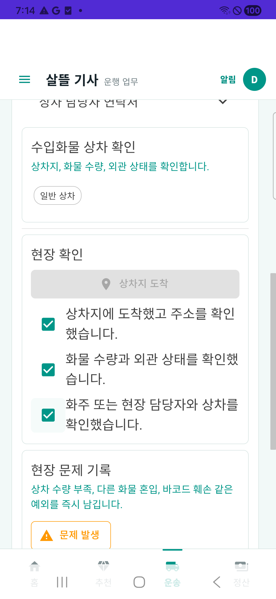
상차지 도착·현장 확인
상차지 도착을 기록하고 장소·수량·현장 담당자 확인을 진행한 사진 촬영 전 단계입니다.
사진 전 상차 완료 버튼 비활성을 별도 UI 검사로 확인했습니다. 이 캡처에는 도착·현장 확인 영역이 보입니다.
원본 크기로 보기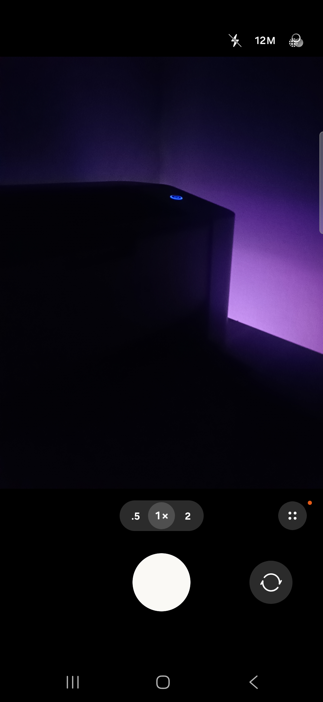
상차 사진 실제 촬영
휴대폰의 시스템 카메라를 열어 시험용 안전한 장면을 촬영했습니다.
실제 카메라 호출이며 실물 화물의 현장 인도를 증명하는 사진은 아닙니다.
원본 크기로 보기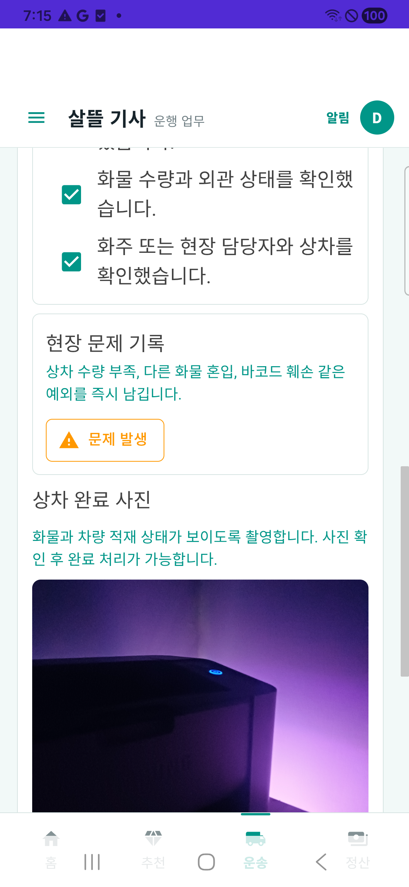
상차 사진 미리보기
촬영한 사진을 앱에서 미리 보고 현장 확인 내용과 함께 상차 완료를 진행했습니다.
사진 미리보기와 서버 저장·증빙 결속은 별도입니다. 저장 파일의 바이트·해시는 정본 근거에서 대조했습니다.
원본 크기로 보기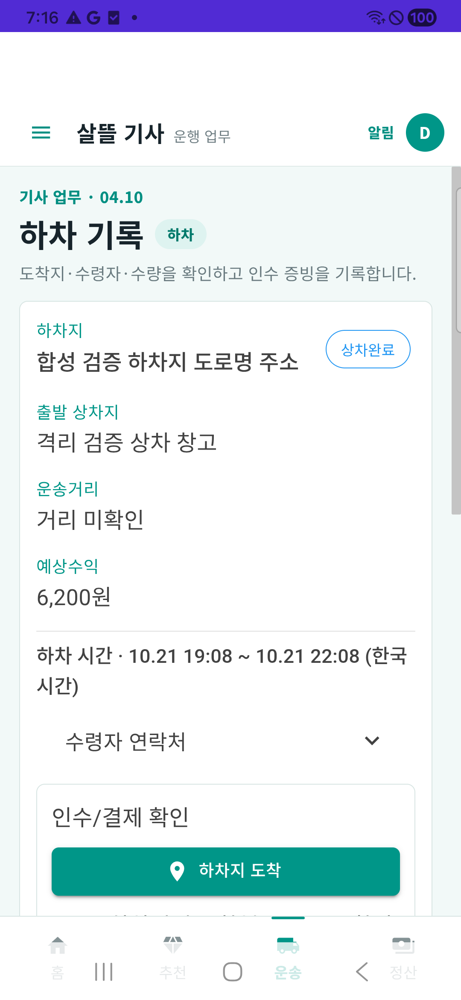
상차 완료 후 하차 화면 이동
상차 완료가 확인된 뒤 자동으로 다음 하차 기록 화면으로 이동했습니다.
상차 완료 표시와 새 ‘하차지 도착’ 버튼을 확인한 장면입니다.
원본 크기로 보기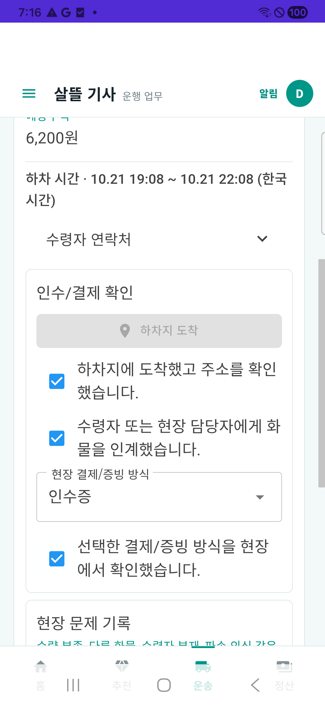
하차지 도착·인수 조건 확인
하차지 도착을 기록하고 수령인 인계와 결제·증빙 조건을 확인한 사진 촬영 전 단계입니다.
사진 전 하차 완료 버튼 비활성을 별도 UI 검사로 확인했습니다. 이 캡처에는 도착·인수 확인 영역이 보입니다.
원본 크기로 보기하차 사진 별도 촬영
상차 사진을 재사용하지 않고 휴대폰 카메라에서 하차용 사진을 새로 촬영했습니다.
두 사진의 저장 해시는 서로 다릅니다. 실제 고객 수령이나 현장 운행을 확인한 것은 아닙니다.
원본 크기로 보기하차 사진 미리보기
촬영한 하차 사진을 앱에서 확인하고 하차 완료 절차를 진행했습니다.
인수·결제/증빙 조건 확인과 사진 확인을 구분합니다. 실제 결제·입금은 수행하지 않았습니다.
원본 크기로 보기
하차 완료 안내
‘하차 완료를 확인했습니다’ 안내와 진행 중 운송으로 돌아가는 버튼을 확인했습니다.
같은 주문의 SQL 인수완료·Mongo 완료와 두 사진의 저장 무결성도 별도로 대조했습니다.
원본 크기로 보기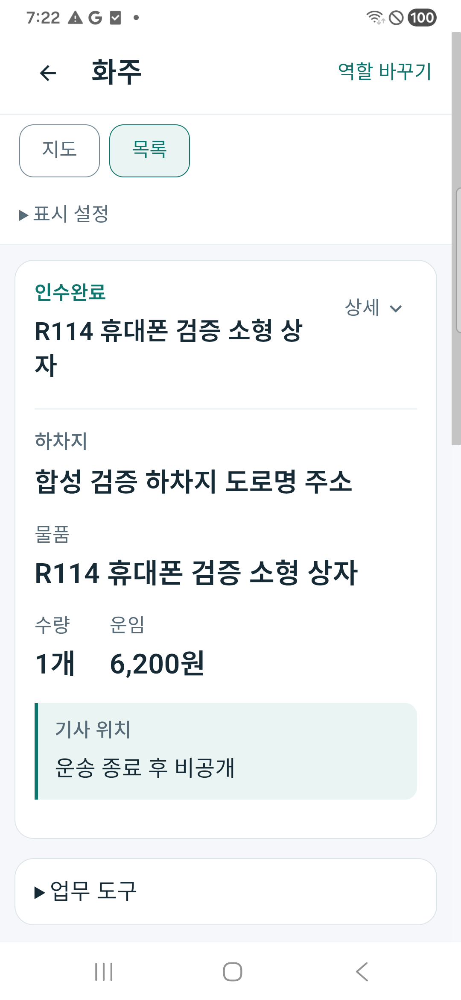
화주도 같은 주문의 인수완료 확인
통합앱의 화주 목록에서 동일 주문의 인수완료 상태, 수량 1개와 운임 6,200원을 확인했습니다.
화주 화면은 결과 조회입니다. 주문 접수는 정상 화주 API로 준비했으며 휴대폰 직접 접수를 검증한 것은 아닙니다.
원본 크기로 보기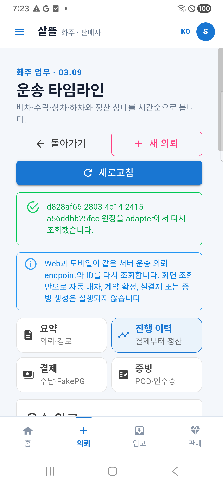
화주 운송 타임라인
화주가 동일 의뢰 ID의 진행 이력 화면으로 이동해 서버 원장 조회 결과를 확인했습니다.
진행 이력 화면 진입·조회 안내 장면입니다. 캡처에 모든 이력 행이 펼쳐진 것은 아닙니다.
원본 크기로 보기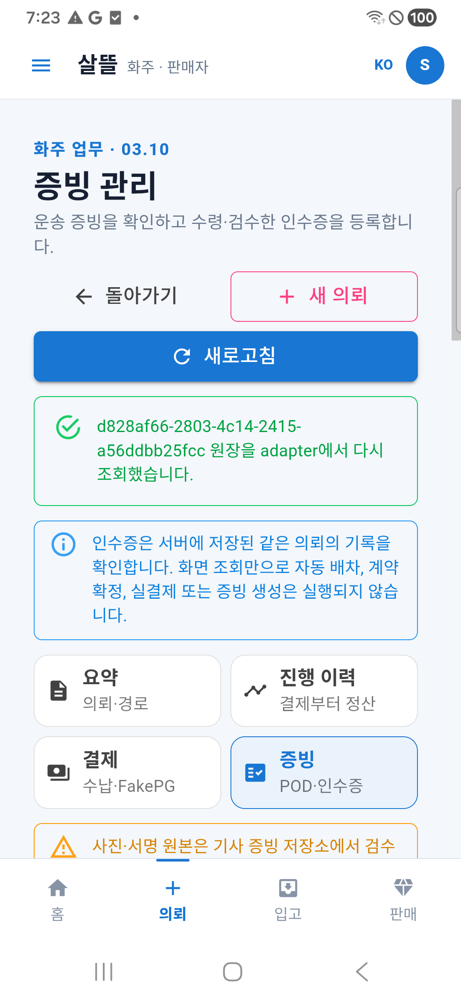
화주 증빙 관리 화면
화주가 같은 의뢰의 증빙 관리 화면으로 이동했습니다. 인수증의 별도 등록 대기는 운송 완료와 구분합니다.
기사 촬영 사진 원문을 이 화면에서 열람한 검증은 아닙니다. 인수증 별도 등록 대기는 별도 상태 확인이며 이 캡처는 화면 상단입니다.
원본 크기로 보기